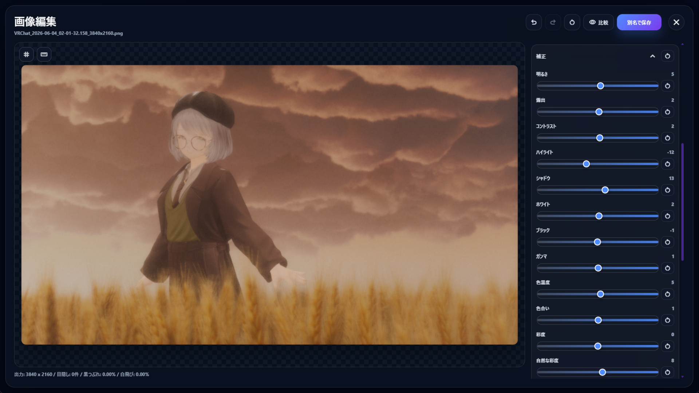
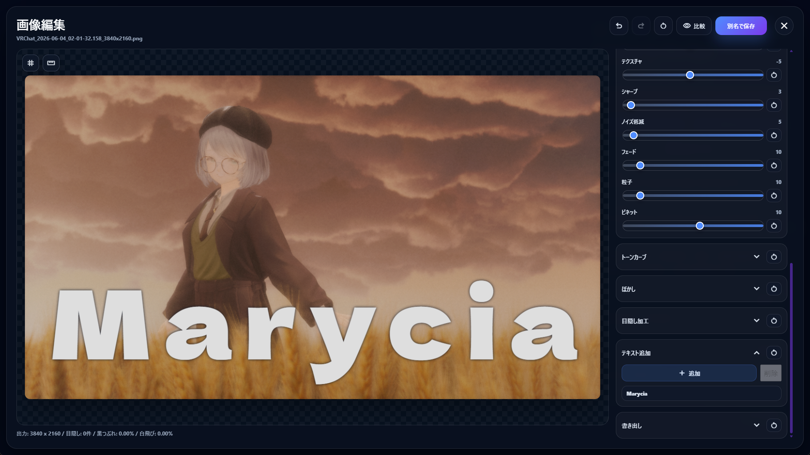
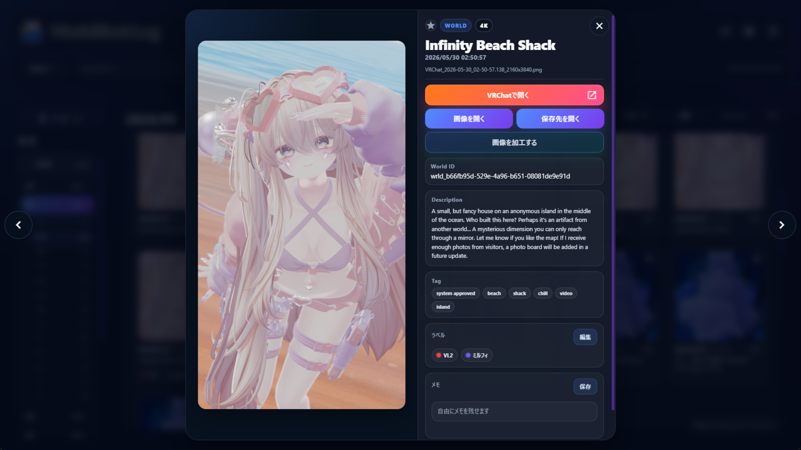
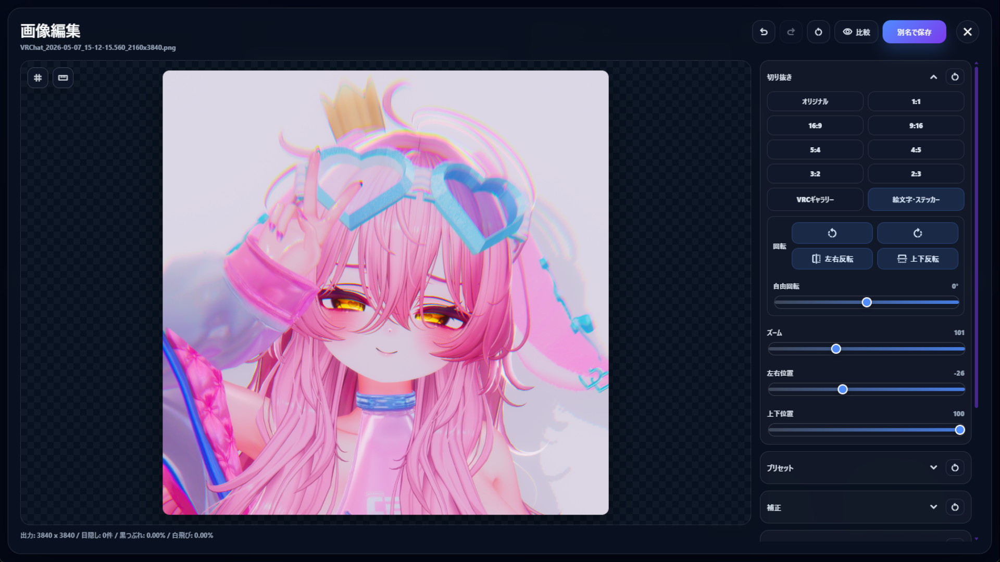

Editing Preview
Problem
気づけばフォルダが写真でいっぱいに。
どこで撮ったのか思い出せなくなる。
明るさ調整やトリミング、切り抜きなどの加工が毎回手間に。
ユーザー名やUIを隠すのが大変。
VRゴーグルを被りながら探すのが大変。
Solution
日付やワールドで素早く検索。見たい写真や行きたいワールドにすぐアクセス。
お気に入りやメモ、タグ付けで管理。検索やソート機能も。
撮影した写真を加工して、SNS投稿用に保存＆管理。
Features
VRChatで撮った大量の写真を、快適に扱うための機能をそろえました。
一覧で分かりやすく表示。
段階表示と絞り込みで大量の写真に対応。
大きく見ながらタグやメモを確認。
気に入った写真や投稿候補を、あとから探しやすく。
WorldのURLを開くことも可能。
気づいたことや撮影情報のメモを残せる。
レタッチやトリミングをアプリ上で完結。
ぼかしや塗りつぶしで写り込みをケア。
SNSやVRChatの絵文字やサムネイル向けのトリミングが可能。
日本語、English、한국어を設定画面から切り替え。
被写体マスクで補正やぼかしの範囲を調整。
データベースや設定をバックアップし、必要なときに復元。
Designed for VRC Users
WorldShot Logは、Windows上で動作するアプリです。VRChatで撮った写真を、 VRゴーグルを被ったままでも快適に利用できるよう設計されています。 デスクトップではキーボードでの操作も可能です。
Editing Tools

Safe & Non-destructive
いつでも元の状態に戻れる安心の仕組み。
編集した写真は別ファイルとして保存できます。
X投稿、Booth掲載、サムネイルなど自由に使えます。
画像をAI処理のために外部サーバーへ送信しません。
Use Cases

お気に入りの1枚をもっと可愛くレタッチをして。

商品イメージ用の素材を整える。

行ったワールドの思い出を残す。

かわいい切り抜きも手軽に作成。
FAQ
Windows向けのElectronアプリとして配布しています。
いいえ。VRChat内やQuest単体で動作するアプリではなく、Windowsのデスクトップ上で使うアプリです。
上書きしません。編集後の画像は投稿用の別ファイルとして保存できます。
PNG、JPEG、WebPでの書き出しに対応しています。
いいえ。AI被写体選択はPC内で実行され、画像はAI処理のために外部サーバーへ送信されません。
追加AIモデルは、必要な場合だけ初回ダウンロードして利用します。
はい。日本語、English、한국어に対応しており、設定画面から切り替えできます。
はい。アプリ起動時に新しいバージョンを確認し、 利用可能な更新がある場合はアプリ上でお知らせします。
アップデート適用後の初回起動時には、主な更新内容も1回だけ表示されます。
条件を満たしていれば読み込めます。目安として、2025年8月27日以降に撮影され、 VRChat側でメタデータ保存が有効になっている写真であれば、 ワールド情報を取得できる可能性があります。
メタデータがない写真は、撮影ワールドなどを自動取得できない場合がありますが、 写真自体の取り込み・整理には利用できます。
アプリ内からアンインストールできます。また、必要に応じて データベースや設定ファイルなどを個別に削除することもできます。
WorldShot Logは元画像を直接上書きしないため、アンインストールしても 元の写真ファイルが勝手に削除されることはありません。